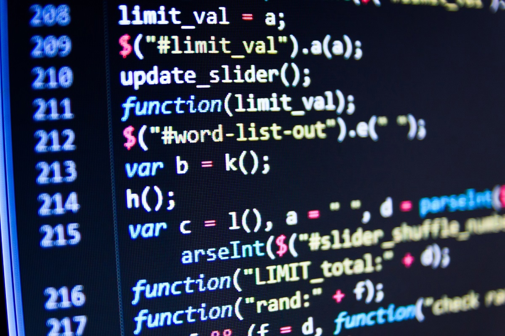

Что такое язык программирования?
Язык программирования — это формальный язык, предназначенный для записи алгоритмов и управления поведением компьютеров. Он позволяет описывать логические конструкции, действия и структуры данных таким образом, чтобы машина могла интерпретировать или компилировать их в исполняемый код. Языки программирования лежат в основе всей цифровой инфраструктуры: от встраиваемых микроконтроллеров до облачных вычислений и искусственного интеллекта.
История появления языков программирования
Истоки языков программирования восходят к XIX веку, когда английская математик Ада Лавлейс описала алгоритм для Аналитической машины Чарльза Бэббиджа. Это описание принято считать первой в мире программой, хотя сама машина так и не была построена. Тем не менее, этот момент стал важным философским прецедентом, продемонстрировавшим возможность абстрактного описания вычислений.
С развитием электроники в середине XX века появились первые электронные компьютеры, такие как ENIAC. Программы для них составлялись в виде машинного кода — длинных последовательностей двоичных инструкций, что делало процесс программирования крайне сложным и подверженным ошибкам. Чтобы упростить задачу, в 1940-х годах начали появляться ассемблеры — системы, позволяющие заменять машинные инструкции на символические обозначения. Это стало первым шагом к повышению уровня абстракции в программировании.
Революция произошла в 1950-х годах, когда появились первые высокоуровневые языки программирования. Одним из первых стал FORTRAN, предназначенный для инженерных расчётов. Вслед за ним появились языки, сфокусированные на разных прикладных задачах. Языки стали более читаемыми и приближенными к естественному языку, а использование компиляторов позволило переводить эти описания в машинный код автоматически.
Классификация языков программирования
Современные языки программирования классифицируются по различным признакам: по уровню абстракции, способу выполнения кода, типу типизации и поддерживаемым парадигмам. Эта классификация помогает определить назначение и особенности языка при выборе инструмента для конкретной задачи.
| Критерий | Типы | Описание |
|---|---|---|
| Уровень | Низкоуровневые, Высокоуровневые | Чем выше уровень языка, тем он ближе к человеческому языку и дальше от машинной архитектуры. |
| Способ выполнения | Компилируемые, Интерпретируемые | Компилятор преобразует код целиком, а интерпретатор выполняет его построчно. |
| Парадигма | Процедурные, Объектно-ориентированные, Функциональные и др. | Определяют стиль программирования и подход к решению задач. |
Современное положение
Сегодня языки программирования становятся всё более универсальными, поддерживая сразу несколько парадигм и платформ. Они развиваются в тесной связи с инструментами разработки, сообществами и реальными задачами бизнеса и науки. Кроме того, повышается роль обучающих материалов и открытого кода, что способствует более широкому распространению знаний о программировании.
Популярные языки быстро эволюционируют, получая новые синтаксические конструкции, встроенные механизмы для многопоточности, обработки ошибок, работы с сетями и базами данных. Появляются языки, нацеленные на узкие области, такие как анализ данных, машинное обучение, встраиваемые системы. Важно и то, что многие современные языки стремятся быть понятными даже для начинающих, снижая порог входа в сферу ИТ.